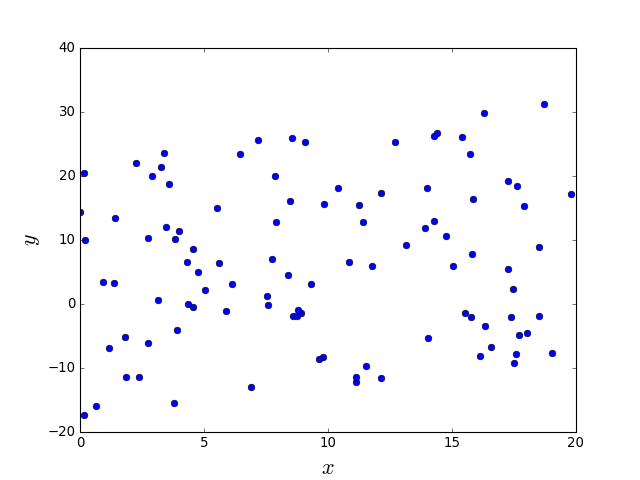
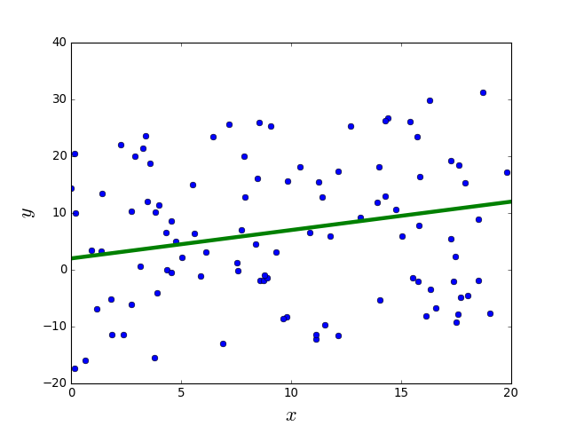
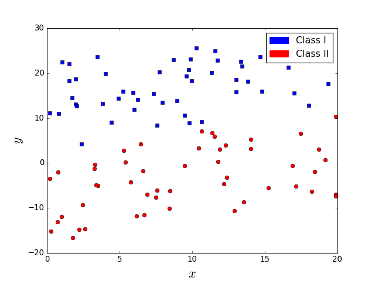
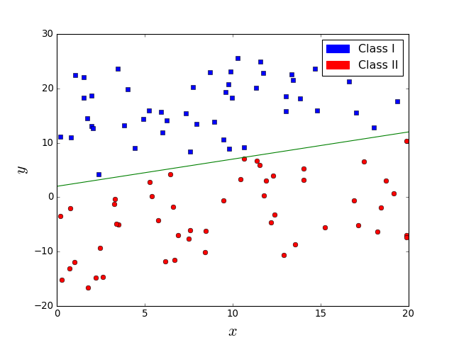
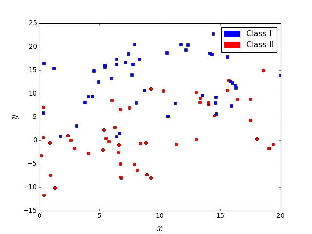
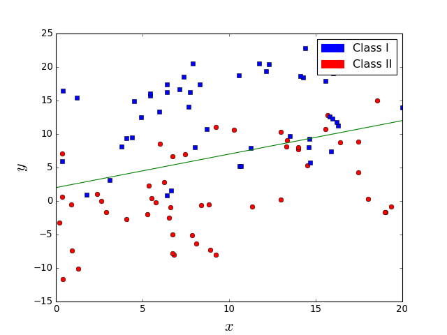
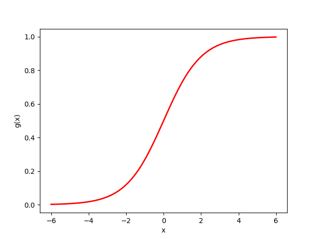
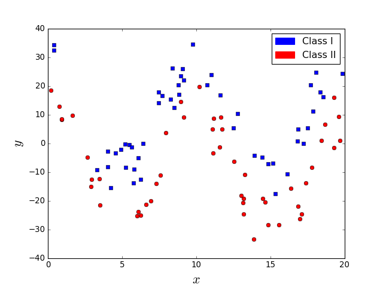
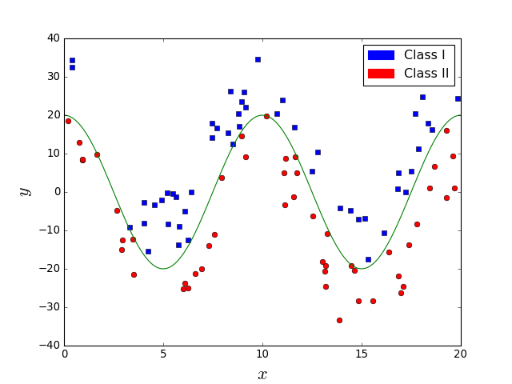
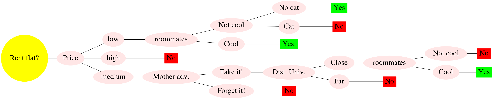

Machine Learning and Neural Networks
Roberto Santana and Unai Garciarena
Department of Computer Science and Artificial Intelligence
University of the Basque Country
MLNN course
Recommended bibliography
- I. Goodfellow and Y. Bengio and A. Courville. Deep Learning. Chapter. 5. Machine Learning Basics.. MIT Press. 2016.
- K. P. Murphy. Machine learning. A probabilistic perspective. MIT Press. 2012.
- (Auxiliar bibliography) G. Thomas. Mathematics for Machine Learning. 2018.
What is machine learning?
Definitions
- The capacity of a computer to learn from experience, i.e., to modify its processing on the basis of newly acquired information. (Oxford dictionary).
- ML is the field of study that gives computers the ability to learn without being explicitly programmed (Samuel:1959).
- Make the computer to adapt to new circumstances and to detect and extrapolate patterns.
- A computer program is said to learn from experience E with respect to some task T and some performance measure P, if its performance on T, as measured by P, improves with experience E (Mitchell:1997).
I. Goodfellow and Y. Bengio and A. Courville. Deep Learning.. MIT Press. 2016.
What is machine learning?
Definitions
- A computer program is said to learn from experience E with respect to some task T and some performance measure P, if its performance on T, as measured by P, improves with experience E (Mitchell:1997).
Components
- The experience E.
- The task T .
- The performance measure P.
I. Goodfellow and Y. Bengio and A. Courville. Deep Learning.. MIT Press. 2016.
Experience E
- Most of ML algorithms that we will consider understand or represent experience as a dataset of examples.
- An example is a collection of features that have been quantitatively measured from some object or event that we want the ML system to process.
- We usually represent an example as a vector \( {\bf{x}} \in \mathcal{R}^n \), where each entry \(x_i\) is a feature.
- One common way of representing a database is with a design matrix, where each row represents an example and each column a feature.
- For supervised classification problems, the class or target variable is part of the experience.
I. Goodfellow and Y. Bengio and A. Courville. Deep Learning.. MIT Press. 2016.
Task T
- The task is the final problem the ML is intended to solve. The same task can be solved using different ML algorithms.
Examples of tasks
- Classification: The ML algorithm is asked to specify which of k categories some example belongs to.
I. Goodfellow and Y. Bengio and A. Courville. Deep Learning.. MIT Press. 2016.
Task T
More examples of tasks
- Structured output: Involves any task where the output is a vector (or other data structure containinng multiple values) with important relationships between the elements.
- Anomaly detection: Given a set of objects or events, the task is to identify some of them as unusual or atypical.
- Synthesis and sampling: To generate new examples that are similar to those in the training data.
- Denoising: The algorithm is given a corrupted example \( \tilde{{\bf{x}}} \in \mathcal{R}^n \) and it should output the clean example \( {\bf{x}} \in \mathcal{R}^n \).
I. Goodfellow and Y. Bengio and A. Courville. Deep Learning.. MIT Press. 2016.
Performance Measure P
- A quantitative measure of the performance of the ML algorithm. Usually, P is specific to the task T.
Examples of performance measures
- Classification: Usually, the accuracy (proportion of examples for which the model produces the correct output).
- Classification: Also, the error rate (proportion of examples for which the model produces the incorrect output).
- Regression: A measure of the distance between the prediction, and the target variable, for example the mean squared error .
- Denoising: The amount of corruption that has been removed from the original example.
I. Goodfellow and Y. Bengio and A. Courville. Deep Learning.. MIT Press. 2016.
Classifiers
The three components of learning algorithms
- Representation: Choosing a representation for a classifier influence to a large extent the set of classifiers that it can learn. This set is called the hypothesis space of the learner.
- Evaluation: To distinguish between good and poor classifiers at least one criterion is required that is usually evaluating using an objective function or scoring function.
- Optimization: The search for the best classifier in the hypothesis space is usually posed as an optimization problem. The choice of the optimization technique is key to the efficiency of the learner.
P. Domingos. A few useful things to know about machine learning. Communications of the ACM, 55(10), 78-87. 2012.
The three components of learning algorithms
Representation |
Evaluation |
Optimization |
Instances |
Accuracy/Error rate |
Combinatorial optimization |
--K-nearest neighbor |
Precision and recall |
--Greedy search |
-- Support vector machines |
Squared error |
--Beam search |
Hyperplanes |
Likelihood |
--Branch-and-bound |
--Naive Bayes |
Posterior probability |
Continuous optimization |
--Logistic regression |
Information gain |
-Unconstrained |
Decision trees |
KL divergence |
--Gradient descent |
Set of rules |
Cost/Utility |
--Conjugate gradient |
--Propositional rules |
Margin |
--Quasi-Newton methods |
--Logic programs |
-Constrained |
|
Neural networks |
--Linear programming |
|
Graphical models |
--Quadratic programming |
|
--Bayesian networks |
Classification problems
Probability analysis
Let \( p({\bf{x}}) \) be a probability distribution defined on a discrete feature \( {\bf{x}} \). \( p({\bf{x}}) \) satisfies the following:
\[ p[{\bf{X}} = {\bf{x}}] = p({\bf{x}}) \]
\[ p({\bf{x}}) \geq 0 \; \; \forall {\bf{x}} \]
\[ \sum_{{\bf{x}}} p({\bf{x}}) = 1 \]
Classification problems
Probability analysis
- Let \( P(C_1) \) and \( P(C_2) \) be the probabilities we know a priori that an observation belongs to clases \( C_1 \) and \( C_2 \), respectively.
- \( P(C_i,{\bf{x}}) \) is the joint probability that \({\bf{X}} \) takes value \( {\bf{x}} \) and belongs to class \( C_i \)
- We define \( P(C_i|{\bf{x}}) \) as the conditional probability that \( {\bf{X}} \) takes value \( {\bf{x}} \) given that it belongs to class \( C_i \)
Classification problems
Probability analysis
- We know that \( P(C_i,{\bf{x}}) = P({\bf{x}}|C_i) P(C_i) \) and \( P(C_i,{\bf{x}}) = P(C_i|{\bf{x}}) P({\bf{x}}) \).
- Therefore, \[ P(C_i|{\bf{x}}) = \frac{P({\bf{x}}|C_i) P(C_i)}{P({\bf{x}})} \]
- This expression is referred as Bayes's theorem.
- \(P(C_i) \) is known as the prior probability.
- \( P({\bf{x}}|C_i) \) is the class conditional probability of \(P({\bf{x}}) \) for class \( C_i \).
- \(P(C_i|{\bf{x}})\) is the posterior probability
Classification problems
Probability analysis
- The posterior probability \( P(C_i|{\bf{x}}) \) gives the probability of a pattern belonging to class \( C_i \) once we have observed the feature vector \( {\bf{x}} \).
- The probability of misclassification is minimized by selecting the clas \( C_i \) having the largest posterior probability, i.e., \[ P(C_i|{\bf{x}}) > P(C_j|{\bf{x}}) \; \; \forall j \neq i. \]
Classification problems
Classifiers
- According to the largest posterior probability \( P(C_i|{\bf{x}}) \), a classifier provides a rule for assigning each point of the feature space to one of \(k\) classes.
- Therefore, a classifier divides the feature space into \( k \) decision regions \( \{ \mathcal{R}_1, \dots, \mathcal{R}_k \} \).
- We can extend the idea of using posterior probabilities for each class by defining a set of discriminant functions \( y_1({\bf{x}}), \dots, y_k({\bf{x}}) \) such that an input vector \( {\bf{x}} \) is assigned to class \( C_i \) if \[ y_i({\bf{x}}) > y_j({\bf{x}}) \; \; \forall j \neq i. \]
Supervised learning
Generative versus discriminative classifiers
- Generative: Provide a model of how the observations can be generated given the class.
- Discriminative: Does not provide a model but allow the discrimination of the observation according to the classes.
- Discriminative models learn the boundary between classes while generative models model the distribution of individual classes.
- Examples of generative models: naive Bayes.
- Examples of discriminative models: decision trees.
Supervised learning
Regressors and classifiers
C. M. Bishop. Neural Networks for Pattern Recognition. Oxford University Press. 2005.
P. Domingos. A few useful things to know about machine learning. Communications of the ACM, 55(10), 78-87. 2012.
Supervised learning
Regression

Supervised learning
Regression

Supervised learning
Linear regression
A set of \(N\) tuples \( (x^1,y^1), \dots (x^N,y^N) \) is given, where \(y\) is the target or dependent variable and \(x\) is the covariate, independent variable or predictor. The task is to predict \(y\) given \(x\).
General regression model: \[ y = f(x) + \epsilon \]
where \( \epsilon \) is the irreducible error that does not depend on x.
Linear regression model: \[ f(x) = \beta_1 x + \beta_0 \]
Linear regression estimate: \[ \hat{y} = \hat{\beta_1} x + \hat{\beta_0} \]
The residual error is the difference between the prediction and the true value. \[ e^i = y^i - \hat{y}^i \]
K. P. Murphy. Machine learning. A probabilistic perspective. MIT Press. 2012.
Supervised learning
Linear regression
The mean squared error is usually used: \[ MSE = \frac{1}{N} \sum_{i=1}^N (y^i - \hat{y}^i)^2 \]
The parameters of the model that minimize this error are learned: \[ \argmin_{\beta_0,\beta_1} \frac{1}{N} \sum_{i=1}^N (y^i - (\beta_1 x^i + \beta_0 - \hat{y}^i))^2 \]
After differentiating with respect to \( \beta_0,\beta_1 \) and equalling to \(0\), we get: \[ \hat{\beta_0} = \bar{y} - \hat{\beta_1}\bar{x}; \; \; \hat{\beta_1} = \frac{\sum_{i=1}^N x^i y^i - N \bar{x} \bar{y}} {\sum_{i=1}^N (x^i)^2 - N \bar{x}^2} \] where \(\bar{x}\) and \(\bar{y}\) are the mean of \(x\) and \(y\) as computed from the data.
K. P. Murphy. Machine learning. A probabilistic perspective. MIT Press. 2012.
Supervised learning
Multiple linear regression
In multiple linear regression we have multiple covariates, represented as a vector \({\bf{x}} \). The model is linear on the covariates.
Multiple linear regression model: \[ f(x) = \beta_0 + \beta_1 x_1 + \beta_2 x_2 + \dots + \beta_n x_n + \epsilon \]
Let \( {\bf{w}} \) be the model weight vector containing \(\beta\) values, , \( {\bf{w}}^T {\bf{x}} \) represents the inner or scalar product between the input vector \( {\bf{x}} \) and the weight vector.
Then, the multiple linear regression model in matrix form is expressed as: \[ y({\bf{x}}) = {\bf{w}}^T {\bf{x}} + \epsilon = \sum_{j=1}^{n} w_jx_j + \epsilon \]
Estimates of \(w\) are found by minimizing the MSE in a way similar to the case of a single covariate. That way the parameters of the model are learned.
K. P. Murphy. Machine learning. A probabilistic perspective. MIT Press. 2012.
Supervised learning
How to separate the classes?

Supervised learning
A line (hyperplane) is sufficient

Supervised learning
Are these two classification problems similarly difficult?

Supervised learning
No. In the right figure, the line does not perfectly separate classes.

Supervised learning
Linear Discriminant Analysis
- LDA learns a linear combinations of the features as a way to separate observations from the two classes.
- It is assumed that \(p({\bf{x}}|y=0) \) and \(p({\bf{x}}|y=1) \) follow a similar distribution.
- Furthermore, it is assumed that the two conditional distributions follow a normal distribution with the same covariance matrix \( \Sigma \) and means \( \mu_0 \) and \( \mu_1 \), respectively.
- Given a vector of features \( {\bf{x}} \) , the decision criterion is \(w {\bf{x}} > c \), where \(w\) and \(c\) have a closed-form expression that depends on the parameters of the normal distributions.
Supervised learning
Linear Discriminant Analysis
Computing the prediction with LDA: \[ p(y=1|x) = sigm \left( {\bf{w}}^T ({\bf{x}} - {\bf{x}}_0) \right) \]
Assuming that the a-priori probability of the two classes is the same: \[ \begin{align} w &= \Sigma^{-1} (\mu_1 - \mu_0) \\ {\bf{x}}_0 &= \frac{1}{2} (\mu_1 + \mu_0) \end{align} \]
Supervised learning
Logistic regression
Let the Bernoulli distribution be defined as: \[ Ber({\bf{x}},p) = p^{{\bf{x}}} (1-p)^{1-{\bf{x}}} \; \forall {\bf{x}} \in \{0,1\} \]
and the sigmoid function defined as: \[ g(\eta) = \frac{1}{1+e^{-\eta}} = \frac{e^{\eta}}{e^{\eta}+1} \]
Then the logistic regression classifier is defined as: \[ p(y \mid {\bf{x}}, {\bf{w}}) = Ber(y \mid g({\bf{w}}^T {\bf{x}})) \]
K. P. Murphy. Machine learning. A probabilistic perspective. MIT Press. 2012.
Supervised learning
Characteristics of the logistic function
- The output of the sigmoid (logistic, or logit) function is always in \([0,1]\).
- \(g(-\infty)=0\), \(g(\infty)=1\), and \(g(0)=0.5\).
Characteristics logistic regression
- It is a classification method, not a regression method.
- Works well for linearly separable problems.
- Multinomial logistic regression is a classification method that generalizes logistic regression to problems with more than two classes.
Logistic function

Supervised learning
What about the problem in the left figure. Is it easier? Does a line suffice in this case?

Supervised learning
It is easy but a line is not sufficient.

Supervised learning
Decision Tree
Decision Trees: How does it work?
- Each internal node corresponds to a test of the value of one of the input attributes \(A_i\) and the branches from the node are labeled with the possible values of the attribute.
- Each leaf node in the tree specifies a value to be returned by the function.
- A learning algorithm is used to extract the tree structure from the data.
S. Russell and P. Norvig. Artificial Intelligence. A Modern Approach. Third Edition. Pearson Press. 2010.
Supervised learning
Decision Trees
- A decision tree represents a function that takes as input a vector of attribute values and returns a decision (a single output value).
- It reaches its decision by performing a sequence of tests.
- Each internal node corresponds to a test of the value of one of the input attributes \(A_i\) and the branches from the node are labeled with the possible values of the attribute.
- Each leaf node in the tree specifies a value to be returned by the function.
- For many problems, the decision tree format yields a nice, concise result .
S. Russell and P. Norvig. Artificial Intelligence. A Modern Approach. Third Edition. Pearson Press. 2010.
Renting a shared flat in Donosti
| Criteria/Flat | F1 | F2 | F3 | F4 | F5 | F6 | F7 | F8 | C1 | C2 | C3 |
|---|---|---|---|---|---|---|---|---|---|---|---|
| Price | high | low | med. | high | low | med. | med. | high | med. | high | low |
| Distance to University | far | far | close | close | close | close | close | close | far | far | close |
| Parking | no | no | no | no | no | yes | no | no | no | no | yes |
| Cool Roommates? | cool | cool | cool | no | no | cool | cool | cool | cool | cool | no |
| Flat owner | nice | nice | not nice | nice | not nice | not nice | not nice | ? | nice | ? | ? |
| Heating for winter | no | no | no | yes | yes | no | yes | yes | no | no | yes |
| Distance to Bus | close | close | close | far | close | close | far | far | far | close | close |
| Room space | med. | large | small | small | small | med. | small | small | med. | small | small |
| Noisy area | no | yes | yes | no | no | yes | yes | no | no | no | no |
| Mother advice | yes | ? | no | ? | no | yes | yes | no | yes | no | no |
| Cat | no | yes | no | no | yes | yes | no | yes | yes | no | no |
| Kitchen | small | small | large | med. | med. | small | small | med. | large | small | small |
| Distance to beach | far | far | close | close | far | far | far | far | far | far | far |
| Floor | 2 | 7 | 1 | 1 | 0 | 3 | 1 | 2 | 4 | 0 | 3 |
| Elevator | no | yes | no | no | no | no | no | no | no | yes | yes |
| Bars around | yes | yes | yes | yes | no | yes | no | no | no | yes | no |
| Did (Will) I like it? | no | yes | no | no | no | yes | yes | no | ? | ? | ? |
Renting a shared flat in Donosti
| Criteria/Flat | F1 | F2 | F3 | F4 | F5 | F6 | F7 | F8 | C1 | C2 | C3 |
|---|---|---|---|---|---|---|---|---|---|---|---|
| Price | high | low | med. | high | low | med. | med. | high | med. | high | low |
| Distance to University | far | far | close | close | close | close | close | close | far | far | close |
| Cool Roommates? | cool | cool | cool | no | no | cool | cool | cool | cool | cool | no |
| Mother advice | yes | ? | no | ? | no | yes | yes | no | yes | no | no |
| Cat | no | yes | no | no | yes | yes | no | yes | yes | no | no |
| Did (Will) I like it? | no | yes | no | no | no | yes | yes | no | ? | ? | ? |
Supervised learning
Decision Tree
Supervised learning
Learning decision trees from examples
- The algorithm to learn the decision trees (\(DT\_Learning\)) adopts a greedy divide-and-conquer strategy: always test the most important attribute first.
- The test divides the problem up into smaller problems that can be solved recursively.
- The most important attribute is the one that makes the most important difference to the classification of an example.
- The goal is to get to the correct classification with a small number of tests.
- To identify the most important attributes, different importance measures are defined.
S. Russell and P. Norvig. Artificial Intelligence. A Modern Approach. Third Edition. Pearson Press. 2010.
Supervised learning
Learning decision trees: Split metrics
- At each step, the DT learning algorithm finds the pair of attribute and cutting point which makes the maximal impurity decrease.
- Let \(p_i\) denote the probability of a class computed from the observations at a given node.
- Gini impurity: \[ 1- \sum_{i=1}^{c} p_i^2 \]
- Entropy: \[ - \sum_{i=1}^{c} p_i^2 log_2(p_i) \]
- Classification error: \[ 1 - \max_{i \in \{1 \dots c\}} p_i \]
Renting a shared flat in Donosti
| Criteria/Flat | F1 | F2 | F3 | F4 | F5 | F6 | F7 | F8 |
|---|---|---|---|---|---|---|---|---|
| Price | high | low | med. | high | low | med. | med. | high |
| Distance to University | far | far | close | close | close | close | close | close |
| Cool Roommates? | cool | cool | cool | no | no | cool | cool | cool |
| Mother advice | yes | ? | no | ? | no | yes | yes | no |
| Cat | no | yes | no | no | yes | yes | no | yes |
| Did (Will) I like it? | no | yes | no | no | no | yes | yes | no |
| Criteria/Value | p(class=yes) | p(class=no) | Impurity | Entropy | Error | <
|---|---|---|---|---|---|
| Price/high | p(class=yes)=0 | p(class=no)=1 | 0 | 0 | 0 | <
| Price/low | p(class=yes)=0.5 | p(class=no)=0.5 | 0.5 | \(-2*0.5^2*log(0.5) \) | 0.5 | <
| cat/yes | p(class=yes)=0.5 | p(class=no)=0.5 | 0.5 | \(-2*0.5^2*log(0.5) \) | 0.5 | <
| cat/no | p(class=yes)=0.25 | p(class=no)=0.75 | ? | ? | ? | <
Decision Tree learning algorithm

S. Russell and P. Norvig. Artificial Intelligence. A Modern Approach. Third Edition. Pearson Press. 2010.
Supervised learning
Learning decision trees: Variants of the algorithm according to split criteria
- Iterative Dichotomiser 3 (ID3) algorithm is based on Shannon entropy.
- C4.5 algorithm is based on Gain Ratio which is considered as a normalized Shannon entropy.
- Classification And Regression Tree (CART) algorithm is based on Gini index.